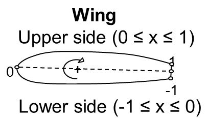
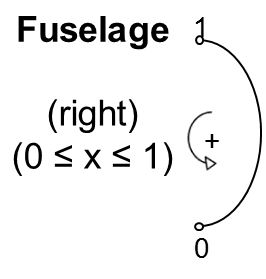
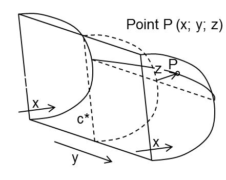

complexType · extension complexBaseType · all
List of 3D points, kept in three relative coordinate vecors (rX, rY, rZ)
This set of vectors contains an ordered list of points for rX, rY, and rZ coordinates in the form of stringBased Vectors. The x, y and z vector elements with the same index specify a 3D point relative to a geometric segment.



| Name | Type | Constraints | Use | Default | Description |
|---|---|---|---|---|---|
@externalDataDirectory | xsd:string | optional | Directory of the external data file | ||
@externalDataNodePath | xsd:string | optional | Path of the node inside the external data file | ||
@externalFileName | xsd:string | optional | Name of the external data file |
| Name | Type | Constraints | OccurrenceHow often the element may appear at this place. The schema writes it as minOccurs and maxOccurs on the declaration. | Default | Description |
|---|---|---|---|---|---|
| allThe children below may appear in any order. Each may appear at most once. | |||||
rX | stringVectorBaseType | [1..1] required | Vector of rX coordinates. Relative circumferential coordinate on wing, fuselage or nacelle profile. | ||
rY | stringVectorBaseType | [1..1] required | Vector of rY coordinates. Relative span coordinate along a segment. | ||
rZ | stringVectorBaseType | [1..1] required | Vector of rZ coordinates. Relative coordinate normal to the linear strake (normalised with chordlength / diameter c*) | ||
| Type | Name |
|---|---|
guideCurveProfileGeometryType | pointList |